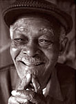
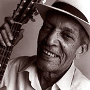
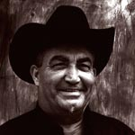
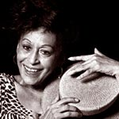
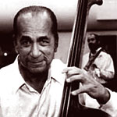
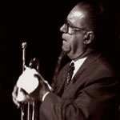
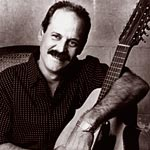
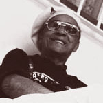
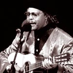

Группа, собранная из полузабытых кубинских музыкантов со средним возрастом за 70 лет, в одночасье добилась мировой славы, подкрепленной американской премией Grammy 1997 за лучший этно-альбом года. Триумфальный концерт в Carnegy Hall - время остановилось, сегодня вечеринка в лучшем клубе города - Buena Vista Social Club ! Последняя вечеринка... и слезы на глазах тех, кто почувствовал это раньше других... Камера подолгу застывает на лицах музыкантов и почти всегда тенью в кадре оказывается Ry Cooder и щемящее соло его слайд-гитары... Chan-Chan... Маленькая Куба играет свою версию великой американской мечты.
В 1953 Ibrahim Ferrer стал лицом и голосом легендарного оркестра, руководимого Pacho Alonso, и оставался с ним более 20 лет. В 1959 оркестр переехал в Гавану и сменил название на Los Buocos. Однако в 80х Ferrer остался неудел и был вынужден жить на нищенскую пенсию, подрабатывая чисткой обуви.
В 1997 Ferrer был приглашен в проект Afro-Cuban All Stars для записи их первого альбома Toda Cuba Le Gusta, и для него это был также дебют в звукозаписи. Afro-Cuban All Stars был первым проектом на Кубе, задуманным владельцем Nonesuch/World Circuit Nick Gold вместе с Ry Cooder и именно его успех сделал возможным создание Buena Vista Social Club.
В отличии от остальных звезд альбома, Ibrahim Ferrer был единственным, кто был совершенно неизвестен за пределами родины, и стал подлинной мировой сенсацией. Среди его последних работ стоит отметить появление на альбоме Gorillaz и потрясающий трек "Hommage A Tonton Ferrer", записанный совместно с Youssou N'dour и Orchestra Baobab для их альбома Specialist in All Styles.
Представим тех, кому Buena Vista Social Club обязана своим неповторимым звуком.

Певец Ibrahim Ferrer родился 27 февраля 1927 в San Luis, городке вблизи Santiago de Cuba. Он начал выступать с 14 лет и после смерти матери был вынужден зарабатывать себе на жизнь пением на улицах Сантьяго. Первую свою группу, Joveneas del Son, Ferrer организовал вместе с кузеном Pineo в 1948. После того, как он приобрел определенную известность в кругу музыкантов, его стали приглашать такие группы, как Conjunto Wilson, Conjunto Sorpresa и Maravillla Beltran. Позже Ferrer пел с лучшей группой Сантьяго тех лет - Orquestra Chepin-Choven - очень влиятельным джазовым оркестром, руководимым композитором Electo Rosell. Rosell был автором крупнейшего хита Ferrer, "El platanal de Bartolo".В 1953 Ibrahim Ferrer стал лицом и голосом легендарного оркестра, руководимого Pacho Alonso, и оставался с ним более 20 лет. В 1959 оркестр переехал в Гавану и сменил название на Los Buocos. Однако в 80х Ferrer остался неудел и был вынужден жить на нищенскую пенсию, подрабатывая чисткой обуви.
В 1997 Ferrer был приглашен в проект Afro-Cuban All Stars для записи их первого альбома Toda Cuba Le Gusta, и для него это был также дебют в звукозаписи. Afro-Cuban All Stars был первым проектом на Кубе, задуманным владельцем Nonesuch/World Circuit Nick Gold вместе с Ry Cooder и именно его успех сделал возможным создание Buena Vista Social Club.
В отличии от остальных звезд альбома, Ibrahim Ferrer был единственным, кто был совершенно неизвестен за пределами родины, и стал подлинной мировой сенсацией. Среди его последних работ стоит отметить появление на альбоме Gorillaz и потрясающий трек "Hommage A Tonton Ferrer", записанный совместно с Youssou N'dour и Orchestra Baobab для их альбома Specialist in All Styles.
Пианист Rubén González родился в Santa Clara в 1919. Он начал учиться игре на пианино с самого детства и в 1934 закончил консерваторию в Cienfuego. Параллельно он получил профессию доктора. Лишь к 1941 Gonzalez сделал окончательный выбор в пользу музыки.
После работы в conjunto великого джазового музыканта Arsenio Rodriquez, где было целое трио пианистов из Ruben, Lili Martinez и Peruchin, он работал в Orquestra de Los Hermanos, группе известного кубинского перкуссиониста Mango Santamaria.
В начале 60х Gonzalez позвал в свой оркестр легендарный создатель cha-cha Enrique Jorrin и их сотрудничество длилось больше четверти века. После смерти Jorrin музыканты предложили Ruben стать руководителем группы, но он предпочел выйти на пенсию.
В 1996 он вместе с Ibrahim Ferrer были приглашены на запись первого альбома Afro-Cuban All Stars.
После триумфального успеха проекта Buena Vista Social Club, Ruben Gonzalez дебютировал как соло-артист, выпустив Indestructible (1998) на лэйбле Egrem и Estrellas De Arieto (1999) на лэйбле Eden Ways. В 2000 он записал потрясающий альбом Chanchullo, ставшей его лебединой песней.
8 декабря 2003 Ruben умер у себя дома в Гаване. Поистине несчастливый год, унесший жизни двух ключевых звезд группы...
После работы в conjunto великого джазового музыканта Arsenio Rodriquez, где было целое трио пианистов из Ruben, Lili Martinez и Peruchin, он работал в Orquestra de Los Hermanos, группе известного кубинского перкуссиониста Mango Santamaria.
В начале 60х Gonzalez позвал в свой оркестр легендарный создатель cha-cha Enrique Jorrin и их сотрудничество длилось больше четверти века. После смерти Jorrin музыканты предложили Ruben стать руководителем группы, но он предпочел выйти на пенсию.
В 1996 он вместе с Ibrahim Ferrer были приглашены на запись первого альбома Afro-Cuban All Stars.
После триумфального успеха проекта Buena Vista Social Club, Ruben Gonzalez дебютировал как соло-артист, выпустив Indestructible (1998) на лэйбле Egrem и Estrellas De Arieto (1999) на лэйбле Eden Ways. В 2000 он записал потрясающий альбом Chanchullo, ставшей его лебединой песней.
8 декабря 2003 Ruben умер у себя дома в Гаване. Поистине несчастливый год, унесший жизни двух ключевых звезд группы...

Гитарист и певец Compay Segundo II (Máximo Francisco Repilado Muñoz) родился в 1907 в Siboney, гористой западной части острова и вырос в Сантьяго. В 15 лет он сочинил "Yo Vengo Acqui", первую из сотен своих песен. Помимо гитары и tres, Compay также учился игре на кларнете и в 20 лет стал кларнетистом Муниципального Оркестра Сантьяго, которым руководил его учитель Enrique Bueno.В конце 20х Segundo создал свой собственный гибрид гитары и tres - armonico(также известный как trilina), гитару со сдвоенной третьей струной, на которой играет по сей день.
Первый раз в Гавану Segundo попал в 1929, но решил переехать только в 1934, после выступления с Saquito Quinteto Cuban Stars. Его пригласили в Муниципальный оркестр Гаваны, но вскоре он присоединился к Cuarteto Hatuey, руководимому Justa Garcia, и поехал на свои первые гастроли в Мексику. Затем Compay Segundo работал с такими знаменитыми музыкантами, как Sindo Garay, Nico Saquito, Miguel Matamaros, Benny Moré, группой El Conjunto Matamaros, в которой он проработал кларнетистом 12 лет. Однако наиболее значимым его проектом был дуэт Los Compadres, созданный вместе с Lorenzo Hierrezuelo. В 1956 Segundo создал квартет Compay Segundo y sus Muchachos, считающийся непревзойденным в традиции классического son. Группа до сих пор существует и его сын, Salvador Repilado, играет в ней на котрабасе.
В 80х Segundo пришлось отойти от музыки и зарабатывать на жизнь скруткой знаменитых кубанских сигар. После феноменального comeback в рамках Buena Vista Social Club Compay Segundo выпустил несколько сольных альбомов - наиболее успешный Calle Salud (1999) на Elektra/Asylum - и активно гастролирует.
Его последний альбом-бенефис Duets (2002) собрал помимо звезд кубинской и этно-музыки таких разных артистов, как Charles Aznavour, Antonio Banderas и Lou Bega... 13 июля 2003 Compay Segundo умер у себя дома в Гаване.

Гитарист и певец Eliades Ochoa родился в 1946 в холмистой местности западного края острова Sierra Maestra, которая связана с городом Santiago de Cuba. В шесть лет он впервые взялся за гитару и с 11 уже играл на улицах, в барах и борделях Сантьяго. Тогда он заработал прозвище 'El Cubanito'. ''Я родился в музыкальной семье и это было у меня в крови'', говорит Ochoa. ''Мой отец играл на tres, и мама тоже, у моей сестры была своя группа, и все мои братья играли на гитаре''. После революции был создан Consejo Nacional de Cultura (Комитет по Культуре) и Ochoa стал представителем рабочего класса музыкантов. Тогда же он получил право вести собственное радио-шоу и с 70х постоянный контракт с самым популярным клубом города, Casa de la Trova.Из-за пристрастия к сельской жизни и ковбойским шляпам за Eliades закрепилось прозвище 'guajiro'. Он играет на особом 7-струнном гибриде tres и гитары с одной сдвоенной струной, настроенной октавой выше.
В 1987 Ochoa пригласили в лучшую группу Cантьяго Cuarteto Patria. Он расширил их репертуар и много гастролировал с ними за пределами Кубы. Eliades Ochoa принял участие в двух альбомах Cuarteto Patria - A Una Coqueta(1993) и Cubafrica(1998). В 1996 выпустил свой первый сольный альбом Lion Is Loose на лэйбле Melodie.
B 1998 Ochoa сыграл несколько концертов с блюзовым виртуозом губной гармоники Charlie Musselwhite и они «отметились» на сольных альбомах друг друга.

Единственная женщина этого проекта, певица Omara Portuondo родилась в Гаване в октябре 1930. Дочь популярного игрока кубинской бейсбольной команды, в 15 лет вслед за старшей сестрой Haydee она стала танцевать в знаменитом клубе Tropicana. По выходным Omara также пела американские джазовые стандарты c группой Loquibambla Swing. Ее фирменный стиль - «кубанизированная» босса-нова - был переназван как 'filin' и Portuondo заработала прозвище 'la novia del filin'.В 1952 Omara и Haydee вместе с певицами Elena Bourke и Moraima Secada и пианистом Aida Diestro cформировали легендарную вокальную группу Cuarteto Las D’Aida (Aida Diestro Quartet), которая оказала огромное влияние на целое поколение кубинских музыкантов своими новаторскими аранжировками. К сожалению, они выпустили всего один альбом на фирме RCA в 1957. В 1959 Portuondo выпустила свой первый сольный альбом Magia Negra.
Карибский кризис застал Omara на гастролях в Америке и она сразу вернулась на родину (хотя Haydee предпочла остаться). Она продолжала выступать с Cuarteto Las D’Aida еще около 15 лет. Затем создала собственный оркестр. Omara Portuondo много гастролировала и работала с такими звездами, как Nat 'King' Cole и Edith Piaf.

Orlando 'Cachaíto' López Vergara не мог не стать контрабасистом. Все великие кубинские исполнители на котрабасе носили фамилию Lopez. В 30х его отец Orestes и дядя Israel, известный как 'cachao', переписали учебник игры на контрабасе. Orestes вместе с Arsenio Rodriguez стояли у истоков ритмов mambo, Israel сыграл ключевую роль в создании стиля descarga. В раннем детстве Cachaito больше склонялся к игре на скрипке, но не смог противостоять семейной традиции.По-началу его привлекали танцевальные ритмы danzon и в 20 лет Orlando играл в популярном танцевальном Orquestra Riverside. Затем по рекомендации дяди он был приглашен в известный оркестр Arcana y sus Maravillas.
В 60х произошел резкий поворот в его карьере и Orlando Lopez вступил в Национальный симфонический оркестр. Вечерами однако он продолжал играть популярную музыку на электро-басу по клубам. Джаз оставался его любимой музыкой и особенно Charles Mingus.

Трубач Manuel 'Guajiro' Mirabel Vazques родился в Melena del Sur в 1933 и выучился играть, сидя на коленях своего отца. C 1951 он начал карьеру профессионального музыканта. В 1953 Mirabel был приглашен в известный джазовый бэнд Swing Casino. Спустя три года он создал свою собственную группу, Conjunto Rumbavana.В 1960 Mirabel присоединился к Orquestra Riverside, чей певец Tito Gomez дал ему прозвище 'guajiro'. Затем он работал в руководимом Armando Ramer Orquestra del Cabaret Tropicana, в базировавшемся в гаванском Hotel Nacional Orquesta Casino Parisien под руководством Leonardo Timor и в Orquestra del ICRT, официальном оркестре государственного радио и телевидения.
Mirabel также гастролировал с такими звездами, как Oscar de Leon и Jose Feliciano.

Barbarito Torres (Barbaro Alberto Torres Delgado) несомненно лучший кубинский исполнитель на laud, небольшом 12-струнном инструменте, близком лютне. Он родился в Matanzas в 1956 и уже в 14 лет начал профессиональную карьеру, играя со многими группами и в том числе в группе великой певицы Celina Gonzalez, Campo Alegere.После трех лет службы в армии Barbarito об'ехал всю Кубу с Siembra Cultural,- позже переименованного в Grupo Yarabi,- затем обосновался в Гаване. Там вместе с Higinio Mullens он больше трех десятилетий был лидером прославленной группы Serenata Yumurina. В 1992 Barbarito создал собственную группу Piquete Cubano, вместе с тем продолжая участвовать в записях многих кубинских звезд. Он также работает музыкальным учителем.
В 1997 Barbarito Torres был приглашен в Afro-Cuban All Stars. После мирового успеха Buena Vista Social Club он выпускает свой первый сольный альбом Havana Cafe (1999) на фирме Atlantic/Havana Caliente.
Тимбалеро Amadito Valdés родился 14 февраля 1946 в Гаване. Музыке учился в Гаванской Консерватории и у таких мастеров как Guillermo Barreto и Alfredo de los Reyes. Он считается создателем уникального стиля импровизации на timbales, микса из африканских ритмов на 6/8 и синкопированых 2/4 стиля son.
С 70х Amadito работал во многих ключевых кубинских оркестрах и принимал участие в записи альбомов таких звезд, как Las D'Aida, Paquito d' Rivera, Emiliano Salvador, Bebo Valdés, Las Estrellas de Areito и Pedro "Peruchin" Justiz.
В 1997 стал участником Afro-Cuban All Stars, параллельно работая с группами Ruben Gonzalez и Felix Baloy. Buena Vista Social Club. Для фирмы Meinl/Roland им была сконструирована фирменная установка timbales в рамках Artist Series. Летом 2002 вышел его первый сольный альбом Bajando Gervasio - пока только в Японии, но позже всемирно.
С 70х Amadito работал во многих ключевых кубинских оркестрах и принимал участие в записи альбомов таких звезд, как Las D'Aida, Paquito d' Rivera, Emiliano Salvador, Bebo Valdés, Las Estrellas de Areito и Pedro "Peruchin" Justiz.
В 1997 стал участником Afro-Cuban All Stars, параллельно работая с группами Ruben Gonzalez и Felix Baloy. Buena Vista Social Club. Для фирмы Meinl/Roland им была сконструирована фирменная установка timbales в рамках Artist Series. Летом 2002 вышел его первый сольный альбом Bajando Gervasio - пока только в Японии, но позже всемирно.

Певец Manuel 'Puntillita' Licea родился в Yareyal, Holguin в 1927 и умер после недолгой болезни 4 декабря 2000. Manuel начал петь с семи лет в местных группах, в 1945 перебрался в Гавану, где присоединился к оркестру трубача Julio Cuevas. Там же он получил свое прозвище за незабываемое исполнение популярной песни "Son de la Puntillita". В начале 50х он работал в легендарной Sonora Matancera, позже прославленной работой с Celia Cruz и много выступал на радио, телевидении, фестивалях и в клубах.Как и многие певцы Золотого Десятилетия Кубинской музыки был вызван из небытия для проекта Afro-Cuban All Stars и именно его голос открывает их первую запись, guajiro "Amor Verdadero". Затем принял участие в Buena Vista Social Club. В последние месяцы своей жизни Puntillita был на гастролях в Японии и Австралии, и в том числе выступал в Sydney Opera House во время Олимпийских Игр...
Весной 2001 фирма TUMI выпустила единственный сольный альбом Puntillita Licea - Homenaje.

Музыкальный руководитель проекта, гитарист, певец и шоумен Juan de Marcos González родился в январе 1954 в Гаване. Его отцом был известный сонеро Marcos Gonzalez Mauriz, игравший вместе с Ruben Gonzalez в Arsenio Rodriguez Orquestra. В 9 лет Juan начал учиться игре на классической гитаре в Гаванской Консерватории у Amadeo Roldan. Свою первую группу под эпохальным названием Verdadera Historia de la Conquista de la Nueva Espana/Настоящая История Завоевания Новой Испании, позаимствованным у романа Bernal Diaz del Castillo, он создал в 12 лет. Это была радикальная рок-команда, не имевшая никакого отношения к кубинской музыке.После исключения из консерватории за недисциплинированность, его отец настоял на получении настоящего образования - Juan Gonzalez закончил Политехнический Институт и даже стал там профессором. Несмотря на то, что его научная карьера продвигалась вполне успешно, он мечтал вернуться к профессиональным занятиям музыкой...
В 1977 под влиянием отца, открывшего ему глаза на подлинную кубинскую музыку, Juan с друзьями создал группу Sierra Maestra, со временем ставшую одной из самых успешных групп традиционного акустического son. Их непосредственными учителями стали великие сонеро Rafael Ortiz и Lazaro Herrera, руководители Septet National of Ignacio Pineiro.
В 1994 во время работы над их четвертым альбомом Dundunbanza! Juan de Marcos познакомился с хозяином World Circuit Nick Gold, который поддержал его давнюю мечту создать группу, об'единяющую в своем составе старых и молодых кубинских музыкантов. В 1987 Gold вместе с Ry Cooder, которого он пригласил в качестве музыкального продюсера, приехали на Кубу, где за две недели на гаванской студии Egrem были записаны сразу три альбома - Afro-Cuban All Stars's Toda Cuba Le Gusta, Introducing Ruben Gonzales и Buena Vista Social Club...
В 2000 Juan Gonzalez создал свою собственную продюссерскую/звукозаписывающую компанию Ahora для продвижения молодых кубинских музыкантов.
Гитарист/мультиинструменталист Ry Cooder - ключевая фигура этого и многих других «топовых» проектов world-music последних лет (вспомним хотя бы записанный вместе с Ali Farke Toure альбом Talking Timbuktu). Никто не умаляет достоинств великих кубинских музыкантов, но без помощи Cooder и владельца World Circuit/Nonesuch Nick Gold оба проекта - Buena Vista Social Club и Afro-Cuban All Stars - едва ли состоялись... и мы бы лишились таких потрясающих звезд! И не появился бы фильм Wim Wenders о той Кубе, которую никто не знает...
Cooder - феноменальный продюсер, умеющий подчеркнуть именно те ноты, которые могут затронуть каждого. Именно его слайд-соло превратило Chan Chan из простой двух-аккордовой песенки в один из крупнейших хитов современной этно-музыки, тему, от которой просто невозможно оторваться. При этом его вмешательство в оригинальную музыку остается очень тактичным.

Cooder - феноменальный продюсер, умеющий подчеркнуть именно те ноты, которые могут затронуть каждого. Именно его слайд-соло превратило Chan Chan из простой двух-аккордовой песенки в один из крупнейших хитов современной этно-музыки, тему, от которой просто невозможно оторваться. При этом его вмешательство в оригинальную музыку остается очень тактичным.
©2000-2002 sahua.
Источник (вдохновения) - в первую очередь фильм Wim Wenders.
Источник (вдохновения) - в первую очередь фильм Wim Wenders.